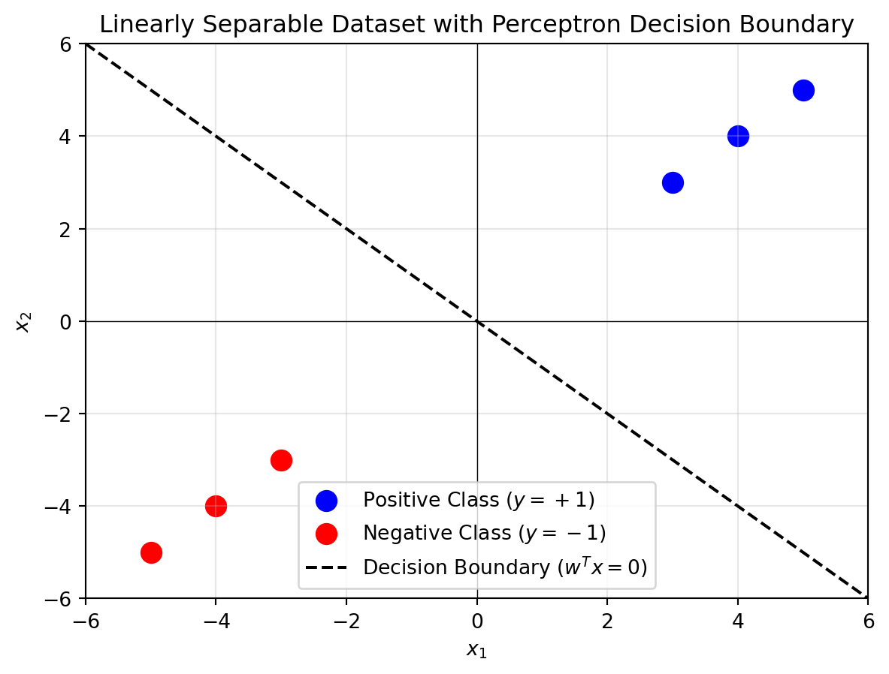

graph TD
X1(Input X1) --> W1(Weight W1)
X2(Input X2) --> W2(Weight W2)
Xn(Input Xn) --> Wn(Weight Wn)
W1 --> SUM[Summation Σ]
W2 --> SUM
Wn --> SUM
B(Bias) --> SUM
SUM --> ACT[Activation Function]
ACT --> Y(Output Y)
style SUM fill:#f9f,stroke:#333,stroke-width:2px
style ACT fill:#bbf,stroke:#333,stroke-width:2px
style Y fill:#bfb,stroke:#333,stroke-width:2px
classDef input fill:#ff9,stroke:#333,stroke-width:2px;
classDef weight fill:#9cf,stroke:#333,stroke-width:2px;
class X1,X2,Xn input;
class W1,W2,Wn weight;
1 Basics of Artificial Neural Network
1.1 Introduction to Artificial Neural Networks (ANNs)
Machine learning has undeniably become a prominent and dynamic field, with its vast array of algorithms sometimes making it challenging to discern key concepts. To gain a clearer understanding, it is valuable to explore various machine learning algorithms in greater detail, focusing not only on their theoretical foundations but also on their step-by-step implementation.
In brief, machine learning is defined as a field that enables computers to learn from data without explicit programming (Arthur Samuel, 1959). It involves the development of algorithms capable of recognizing patterns in data and making decisions based on statistical analysis, probability theory, combinatorics, and optimization techniques.
This discussion begins with an exploration of perceptrons and ADALINE (Adaptive Linear Neuron), which are part of single-layer neural networks. The perceptron is the first algorithmically defined learning algorithm and serves as an intuitive, easy-to-implement introduction to modern machine learning algorithms, particularly artificial neural networks (or “deep learning”). ADALINE, an improvement on the perceptron, provides an excellent opportunity to understand gradient descent, a widely-used optimization method in machine learning.
1.1.1 Introduction
Artificial Neural Networks (ANNs) are a class of computational models inspired by the biological neural networks in the human brain. These models have revolutionized numerous fields, including machine learning, computer vision, natural language processing, and data analytics, by mimicking the complex processing power of the human brain in a simplified computational framework. ANNs are at the core of deep learning algorithms, enabling machines to learn from vast amounts of data, recognize patterns, and make decisions with little to no human intervention.
The concept of ANNs can be traced back to the 1940s when pioneers like Warren McCulloch and Walter Pitts introduced the first simplified model of the neuron. In more intuitive terms, neurons can be understood as the subunits of a neural network in a biological brain. Here, the signals of variable magnitudes arrive at the dendrites. Those input signals are then accumulated in the cell body of the neuron, and if the accumulated signal exceeds a certain threshold, a output signal is generated that which will be passed on by the axon. This model, known as the McCulloch-Pitts neuron, was a logical abstraction that represented a binary decision-making process based on weighted inputs. However, it wasn’t until the 1980s, with the development of the backpropagation algorithm by Geoffrey Hinton and others, that ANNs began to demonstrate significant potential for learning complex patterns and tasks.
Key Concepts in Artificial Neural Networks
Neurons: The fundamental units in an ANN, inspired by biological neurons. Each neuron receives one or more inputs, processes them, and produces an output. The output is typically determined by applying an activation function to a weighted sum of the inputs.
Architecture: An ANN is composed of layers of neurons:
- Input Layer: The first layer that receives input data.
- Hidden Layers: Intermediate layers where computations occur and complex features are learned.
- Output Layer: The final layer that produces the output or prediction.
The number of layers and the number of neurons in each layer are important design considerations that influence the network’s ability to learn complex relationships.
Weights and Biases: Each connection between neurons has an associated weight, which determines the importance of the input. Biases are added to the weighted sum to allow the network to better model the data and shift the activation function.
Activation Function: The activation function introduces non-linearity into the model, enabling it to learn and represent complex patterns. Common activation functions include:
- Sigmoid: A logistic function that outputs values between 0 and 1.
- Tanh: A hyperbolic tangent function that outputs values between -1 and 1.
- ReLU (Rectified Linear Unit): Outputs zero for negative inputs and the input value itself for positive inputs, helping mitigate the vanishing gradient problem in deep networks.
Learning Process: Training an ANN involves adjusting the weights and biases through a process called optimization, typically using the gradient descent algorithm. During training, the network’s predictions are compared to the actual outcomes, and the difference, known as the loss or error, is minimized using optimization techniques.
Backpropagation: This algorithm computes the gradient of the loss function with respect to each weight by applying the chain rule of calculus. This information is used to update the weights in a way that reduces the overall error, allowing the network to improve over time.
1.1.2 Historical Development and Evolution
The origins of neural networks lie in the early 20th century, with key milestones such as the Perceptron (developed by Frank Rosenblatt in 1958) and the Backpropagation Algorithm (1986), which was a breakthrough in training multilayer networks. The development of the Deep Learning paradigm in the 2000s, fueled by advances in computing power, large datasets, and efficient algorithms, further accelerated the application of ANNs. Notable examples include Convolutional Neural Networks (CNNs) for image recognition and Recurrent Neural Networks (RNNs) for sequence modeling, such as speech and language processing.
1.1.3 Modern Applications of Artificial Neural Networks
In recent years, the ability of ANNs to perform high-level tasks has grown substantially. Some of the transformative applications include:
- Computer Vision: ANNs are used in image classification, object detection, facial recognition, and medical image analysis.
- Natural Language Processing (NLP): ANNs, particularly transformer models, power state-of-the-art techniques in machine translation, sentiment analysis, and chatbots.
- Robotics and Autonomous Systems: Neural networks enable robots to perceive their environment and make real-time decisions.
- Healthcare: ANNs are applied in predictive analytics for disease diagnosis, treatment planning, and drug discovery.
- Finance: ANNs help in fraud detection, algorithmic trading, and customer behavior prediction.
1.1.4 Challenges and Future Directions
Despite their powerful capabilities, ANNs face several challenges:
- Overfitting: Neural networks can become too specialized to the training data, losing the ability to generalize to new, unseen data.
- Interpretability: The “black-box” nature of ANNs makes it difficult to understand how they arrive at specific decisions, which can be problematic in fields requiring explainability (e.g., healthcare, law).
- Data and Computation: Training deep neural networks requires large amounts of labeled data and significant computational resources, which can be limiting in certain contexts.
Future research directions aim to address these challenges, including the development of more interpretable models, reducing the data and computation requirements, and creating more robust systems that can generalize across different domains.
1.2 Perceptron
To continue with the story, a few years after McCulloch and Walter Pitt, Frank Rosenblatt published the first concept of the Perceptron learning rule. The perceptron is one of the earliest neural network models (Rosenblatt 1957).
Frank Rosenblatt’s Perceptron
The main idea was to define an algorithm in order to learn the values of the weights \(w\) that are then multiplied with the input features in order to make a decision whether a neuron fires or not. In context of pattern classification, such an algorithm could be useful to determine if a sample belongs to one class or the other.
It models a single artificial neuron capable of binary classification for linearly separable data. Despite its limitations, the perceptron laid the foundation for more complex architectures like Multilayer Perceptrons (MLPs) and deep neural networks, which use sigmoid neurons for non-linear decision boundaries.
1.2.1 Perceptron Model
The perceptron computes a weighted sum of inputs and applies a step function for classification: \[ z = \sum_{i=1}^n w_i x_i + b \] \[ \hat{y} = \begin{cases} 1 & \text{if } z > 0 \\ 0 & \text{otherwise} \end{cases} \]
1.2.2 Perceptron Learning Rule
Weights are updated iteratively based on the error: \[ w_i \gets w_i + \eta (y - \hat{y}) x_i \] where \(\eta\) is the learning rate.
1.2.3 Perceptron Algorithm
Input: A dataset \(D = \{(x_i, y_i)\}\), where \(x_i\) is the feature vector and \(y_i\in \{+1,-1\}\) is the label.
Output: A weight vector \(\mathbf{w}\).
- Initialize \(\mathbf{w} = \mathbf{0}\).
- Repeat until convergence:
- Set \(m = 0\).
- For each \((x_i, y_i) \in D\):
- If \(y_i (\mathbf{w}^T \cdot \mathbf{x_i}) \leq 0\):
- Update \(\mathbf{w} \gets \mathbf{w} + y_i \mathbf{x_i}\).
- Increment \(m \gets m + 1\).
- If \(y_i (\mathbf{w}^T \cdot \mathbf{x_i}) \leq 0\):
- If \(m = 0\), terminate the algorithm.
Perceptron Convergence
The Perceptron was arguably the first algorithm with a strong formal guarantee. If a data set is linearly separable, the Perceptron will find a separating hyperplane in a finite number of updates. (If the data is not linearly separable, it will loop forever.)
1.2.4 Perceptron Theorem and Margin
The Perceptron Mistake Bound Theorem states that the Perceptron algorithm makes at most \(\frac{1}{\gamma^2}\) updates (mistakes), where \(\gamma\) is the margin of separability of the data. The margin is defined as the smallest distance between any data point and the decision boundary, normalized by the magnitude of the weight vector: \[ \gamma = \frac{\min_{i} y_i (\mathbf{w}^T \mathbf{x_i})}{\|\mathbf{w}\|} \] where: - \(\mathbf{w}\) is the weight vector. - \(\mathbf{x_i}\) is a data point. - \(y_i\) is the corresponding label ((+1) or (-1)).
1.2.5 Implications of the Theorem
Large Margin is Desirable:
- A larger margin \(\gamma\) implies fewer mistakes because the mistake bound decreases as \(\gamma\) increases.
- Intuitively, a larger margin means the data points are farther from the decision boundary, making them less likely to be misclassified.
Quick Convergence:
- The algorithm will converge faster on datasets with a larger margin since fewer updates (or mistakes) are required.
- Conversely, if \(\gamma\) is small (data points are closer to the boundary), the algorithm requires more updates to separate the data correctly.
1.2.6 Characterizing Data Sets for Fast Convergence
Datasets for which the Perceptron algorithm converges quickly share the following properties:
Large Margin:
- Data points are well-separated from the decision boundary.
- The decision boundary can be drawn with minimal ambiguity.
Linearly Separable Data:
- The dataset must be linearly separable for the Perceptron algorithm to converge.
- Overlapping or inseparable datasets will cause the algorithm to loop indefinitely.
1.2.7 Example of a Dataset with Large Margin
Consider the following dataset in two-dimensional space:
- Positive class (\(y_i = +1\)): Points \((3, 3), (4, 4), (5, 5)\).
- Negative class (\(y_i = -1\)): Points \((-3, -3), (-4, -4), (-5, -5)\).
The data is linearly separable with a large margin (distance between closest points and the decision boundary).
import matplotlib.pyplot as plt
import numpy as np
# Dataset
positive_points = np.array([[3, 3], [4, 4], [5, 5]])
negative_points = np.array([[-3, -3], [-4, -4], [-5, -5]])
# Define weights and bias for the Perceptron hyperplane
# Example weights (assuming the Perceptron learned these weights)
w = np.array([1, 1]) # w1 and w2
b = 0 # Bias term
# Generate x1 values for plotting
x1 = np.linspace(-6, 6, 100)
# Compute x2 values from the hyperplane equation w1*x1 + w2*x2 + b = 0
x2 = -(w[0] * x1 + b) / w[1]
# Plot the dataset
plt.scatter(positive_points[:, 0], positive_points[:, 1], color='blue', label='Positive Class ($y=+1$)', s=100)
plt.scatter(negative_points[:, 0], negative_points[:, 1], color='red', label='Negative Class ($y=-1$)', s=100)
# Plot the decision boundary (hyperplane)
plt.plot(x1, x2, color='black', linestyle='--', label='Decision Boundary ($w^T x = 0$)')
# Formatting the plot
plt.axhline(0, color='black', linewidth=0.5, linestyle='-')
plt.axvline(0, color='black', linewidth=0.5, linestyle='-')
plt.grid(alpha=0.3)
plt.legend()
plt.title('Linearly Separable Dataset with Perceptron Decision Boundary')
plt.xlabel('$x_1$')
plt.ylabel('$x_2$')
plt.xlim(-6, 6)
plt.ylim(-6, 6)
# Show the plot
plt.show()
1.2.8 Visualization of Large vs. Small Margins
The following diagrams illustrate the difference between datasets with large and small margins:
graph TD
A[Decision Boundary] ---|Large Margin| C((Positive Class))
A ---|Large Margin| D((Negative Class))
subgraph Large Margin
C & D
end
E[Decision Boundary] ---|Small Margin| G((Positive Class))
E ---|Small Margin| F((Negative Class))
subgraph Small Margin
G & F
end
1.2.9 Simulating OR gate using Perceptron
The following python code will simulate the OR gate using the logic of perceptron.
import numpy as np
# Step function (activation function)
def step_function(x):
return 1 if x >= 0 else 0
# Perceptron training algorithm
def perceptron(X, y, learning_rate=0.1, epochs=10):
# Initialize weights and bias
weights = np.zeros(X.shape[1])
bias = 0
# Training process
for epoch in range(epochs):
total_error = 0
for i in range(len(X)):
# Calculate weighted sum (z)
z = np.dot(X[i], weights) + bias
# Apply step function to get prediction
prediction = step_function(z)
# Calculate error
error = y[i] - prediction
total_error += abs(error)
# Update weights and bias based on the error
weights += learning_rate * error * X[i]
bias += learning_rate * error
# Optionally, print the error for each epoch
print(f'Epoch {epoch + 1}: Total Error = {total_error}')
return weights, bias
# Perceptron test function
def predict(X, weights, bias):
predictions = []
for i in range(len(X)):
z = np.dot(X[i], weights) + bias
prediction = step_function(z)
predictions.append(prediction)
return predictions
# OR Gate Inputs and Outputs
# Input X: [A, B] where A and B are the inputs
# Output y: The corresponding OR operation output
X = np.array([[0, 0],
[0, 1],
[1, 0],
[1, 1]])
y = np.array([0, 1, 1, 1]) # OR gate outputs
# Train the perceptron
weights, bias = perceptron(X, y, learning_rate=0.1, epochs=10)
# Test the perceptron
predictions = predict(X, weights, bias)
# Print predictions
print("\nPredictions:")
for i in range(len(X)):
print(f'Input: {X[i]}, Predicted Output: {predictions[i]}')Epoch 1: Total Error = 2
Epoch 2: Total Error = 2
Epoch 3: Total Error = 1
Epoch 4: Total Error = 0
Epoch 5: Total Error = 0
Epoch 6: Total Error = 0
Epoch 7: Total Error = 0
Epoch 8: Total Error = 0
Epoch 9: Total Error = 0
Epoch 10: Total Error = 0
Predictions:
Input: [0 0], Predicted Output: 0
Input: [0 1], Predicted Output: 1
Input: [1 0], Predicted Output: 1
Input: [1 1], Predicted Output: 11.2.10 Simulating AND gate using a perceptron
The perceptron model for an AND gate is shown below.
The python code for simulating the AND gate using the perceptron is shown below.
import numpy as np
# Step function (activation function)
def step_function(x):
return 1 if x >= 0 else 0
# Perceptron training algorithm
def perceptron(X, y, learning_rate=0.1, epochs=10):
# Initialize weights and bias
weights = np.zeros(X.shape[1])
bias = 0
# Training process
for epoch in range(epochs):
total_error = 0
for i in range(len(X)):
# Calculate weighted sum (z)
z = np.dot(X[i], weights) + bias
# Apply step function to get prediction
prediction = step_function(z)
# Calculate error
error = y[i] - prediction
total_error += abs(error)
# Update weights and bias based on the error
weights += learning_rate * error * X[i]
bias += learning_rate * error
# Optionally, print the error for each epoch
print(f'Epoch {epoch + 1}: Total Error = {total_error}')
return weights, bias
# Perceptron test function
def predict(X, weights, bias):
predictions = []
for i in range(len(X)):
z = np.dot(X[i], weights) + bias
prediction = step_function(z)
predictions.append(prediction)
return predictions
# OR Gate Inputs and Outputs
# Input X: [A, B] where A and B are the inputs
# Output y: The corresponding OR operation output
X = np.array([[0, 0],
[0, 1],
[1, 0],
[1, 1]])
y = np.array([0, 1, 1, 1]) # OR gate outputs
# Train the perceptron
weights, bias = perceptron(X, y, learning_rate=0.1, epochs=10)
# Test the perceptron
predictions = predict(X, weights, bias)
# Print predictions
print("\nPredictions:")
for i in range(len(X)):
print(f'Input: {X[i]}, Predicted Output: {predictions[i]}')Epoch 1: Total Error = 2
Epoch 2: Total Error = 2
Epoch 3: Total Error = 1
Epoch 4: Total Error = 0
Epoch 5: Total Error = 0
Epoch 6: Total Error = 0
Epoch 7: Total Error = 0
Epoch 8: Total Error = 0
Epoch 9: Total Error = 0
Epoch 10: Total Error = 0
Predictions:
Input: [0 0], Predicted Output: 0
Input: [0 1], Predicted Output: 1
Input: [1 0], Predicted Output: 1
Input: [1 1], Predicted Output: 11.2.11 Simulating NOR gate using the Perceptron
Here is the Python code to simulate a perceptron for a NOR gate. The NOR gate is the negation of the OR gate, so it outputs 1 only when both inputs are 0.
import numpy as np
# Define the step function
def step_function(x):
return 1 if x >= 0 else 0
# Perceptron class to simulate the NOR gate
class Perceptron:
def __init__(self, input_size, learning_rate=0.1):
# Initialize weights and bias to zero
self.weights = np.zeros(input_size)
self.bias = 0
self.learning_rate = learning_rate
def predict(self, inputs):
# Calculate the weighted sum
weighted_sum = np.dot(inputs, self.weights) + self.bias
# Apply the step activation function
return step_function(weighted_sum)
def train(self, inputs, targets, epochs=10):
# Train the perceptron using the input-output pairs
for epoch in range(epochs):
for i in range(len(inputs)):
input_data = inputs[i]
target = targets[i]
# Compute the prediction
prediction = self.predict(input_data)
# Calculate the error
error = target - prediction
# Update the weights and bias using the perceptron learning rule
self.weights += self.learning_rate * error * input_data
self.bias += self.learning_rate * error
# Define the input-output pairs for a NOR gate
inputs = np.array([
[0, 0], # Input: (0, 0)
[0, 1], # Input: (0, 1)
[1, 0], # Input: (1, 0)
[1, 1], # Input: (1, 1)
])
# Output of NOR gate
targets = np.array([1, 0, 0, 0])
# Create and train the perceptron
perceptron = Perceptron(input_size=2)
perceptron.train(inputs, targets, epochs=10)
# Test the trained perceptron on the inputs
print("Trained weights:", perceptron.weights)
print("Trained bias:", perceptron.bias)
# Test the perceptron for all input combinations
for input_data in inputs:
prediction = perceptron.predict(input_data)
print(f"Input: {input_data}, Prediction: {prediction}")Trained weights: [-0.1 -0.1]
Trained bias: 0.0
Input: [0 0], Prediction: 1
Input: [0 1], Prediction: 0
Input: [1 0], Prediction: 0
Input: [1 1], Prediction: 0This code will train the perceptron to simulate the NOR gate and test it for all possible input combinations. The weights and bias will be adjusted during training to ensure the perceptron correctly implements the NOR gate behavior.
1.2.12 Perceptron fails!
whether the perceptron win on XOR gate? No, the perceptron cannot learn the XOR gate. This is a well-known limitation of the perceptron model, and it’s related to the fact that the XOR function is non-linearly separable.
Perceptron fails!
A perceptron can only solve problems that are linearly separable, meaning that the classes (outputs) can be separated by a straight line (or a hyperplane in higher dimensions). The XOR gate outputs 1 when the inputs are (0, 1) or (1, 0), and outputs 0 when the inputs are (0, 0) or (1, 1).
If you try to plot these points, you’ll see that you can’t separate the positive examples (output 1) from the negative examples (output 0) with a single straight line.
1.2.13 Perceptron neuron- the foundation of modern Machine Learning
The Perceptron model, introduced by Frank Rosenblatt in 1958, marked one of the earliest developments in artificial intelligence and neural networks. Initially conceived as a model for pattern recognition and early neural computation, the Perceptron was designed to simulate a biological neuron, learning to classify inputs into two categories through a simple linear decision boundary. Despite its early promise, the limitations of the basic Perceptron were exposed in the 1960s, particularly its inability to solve non-linearly separable problems, famously highlighted in Marvin Minsky and Seymour Papert’s book Perceptrons (1969). However, with the advent of more sophisticated algorithms and architectures, such as multi-layer perceptrons (MLPs) and the backpropagation algorithm in the 1980s, the Perceptron concept was revitalized. Today, it forms the foundational concept for deep learning models and modern neural networks, which are widely applied in various fields, including image and speech recognition, natural language processing, and autonomous systems, demonstrating its enduring relevance and adaptability in tackling complex, non-linear real-world problems.
1.2.14 Introduction to the Sigmoid Activation Function
The sigmoid function, defined as
\[ \sigma(x) = \frac{1}{1 + e^{-x}}, \]
maps any real-valued input to an output between 0 and 1, making it ideal for binary classification tasks. It has played a pivotal role in the development of neural networks, especially in overcoming the limitations of the step function used in early perceptrons.
1.2.15 Historical Context
In the 1950s, Frank Rosenblatt’s perceptron used the step function, which works well for linearly separable problems but fails with more complex datasets, like the XOR problem. The introduction of the sigmoid activation function in the 1980s addressed this by enabling smooth decision boundaries and facilitating the backpropagation algorithm, allowing neural networks to learn from data effectively.
1.2.16 Relevance to Modern Neural Networks
The sigmoid function’s differentiability makes it ideal for gradient-based optimization, which is essential for training deep neural networks. Its output is a probability, making it suitable for binary classification problems. Additionally, the derivative of the sigmoid is easy to compute:
\[ \sigma'(x) = \sigma(x)(1 - \sigma(x)), \]
which aids in backpropagation by allowing efficient weight updates. Despite some limitations, such as the vanishing gradient problem, the sigmoid function is widely used in the output layers of networks for tasks requiring probabilistic outputs.
1.2.17 Applications
- Binary classification (e.g., logistic regression).
- Output layer in neural networks for binary classification.
- Probabilistic models in machine learning and AI.
While alternatives like ReLU are often used in deeper layers due to the vanishing gradient problem, sigmoid remains a powerful tool for probabilistic predictions.
1.2.18 Sigmoid Neuron
The sigmoid neuron replaces the step function with the sigmoid function: \[ \sigma(z) = \frac{1}{1 + e^{-z}} \] This allows for smooth gradients, enabling the use of backpropagation for training MLPs.
Following python code demonstrate the effective use of the sigmoid activation function in the simulation of an AND gate.
import numpy as np
# Sigmoid activation function
def sigmoid(x):
return 1 / (1 + np.exp(-x))
# Derivative of sigmoid for gradient calculation
def sigmoid_derivative(x):
return x * (1 - x)
# Define the training inputs and outputs (AND gate)
X = np.array([[0, 0],
[0, 1],
[1, 0],
[1, 1]])
y = np.array([[0], [0], [0], [1]]) # Expected output for AND gate
# Initialize weights and bias randomly
weights = np.random.rand(2, 1) # Random weights for 2 inputs
bias = np.random.rand(1) # Random bias
# Learning rate
learning_rate = 0.1
# Training the perceptron
for epoch in range(10000): # Number of iterations
# Forward pass
weighted_sum = np.dot(X, weights) + bias
output = sigmoid(weighted_sum)
# Compute error
error = y - output
# Backpropagation (Gradient Descent)
adjustment = error * sigmoid_derivative(output)
weights += np.dot(X.T, adjustment) * learning_rate
bias += np.sum(adjustment) * learning_rate
# Optional: Print the error at intervals
if epoch % 1000 == 0:
print(f"Epoch {epoch}, Error: {np.mean(np.abs(error))}")
# Testing the perceptron
print("\nFinal Output After Training:")
for i in range(len(X)):
print(f"Input: {X[i]} => Predicted Output: {round(output[i][0])}")Epoch 0, Error: 0.5619616767302489
Epoch 1000, Error: 0.15711929476169195
Epoch 2000, Error: 0.10888895642561364
Epoch 3000, Error: 0.08691945516104863
Epoch 4000, Error: 0.07396708090435249
Epoch 5000, Error: 0.06526595419809272
Epoch 6000, Error: 0.05893908456310959
Epoch 7000, Error: 0.05408757038030876
Epoch 8000, Error: 0.05022291881319084
Epoch 9000, Error: 0.047054971144594046
Final Output After Training:
Input: [0 0] => Predicted Output: 0
Input: [0 1] => Predicted Output: 0
Input: [1 0] => Predicted Output: 0
Input: [1 1] => Predicted Output: 11.3 Important Theorems and Results
- Perceptron Convergence Theorem: If the data is linearly separable, the perceptron will converge to a solution in a finite number of steps.
- Universal Approximation Theorem: An MLP with a single hidden layer and non-linear activation functions can approximate any continuous function.
1.4 Examples
1.4.1 Simple Example: Perceptron for AND Gate
import numpy as np
# Inputs (x1, x2) and outputs (y)
X = np.array([[0, 0], [0, 1], [1, 0], [1, 1]])
y = np.array([0, 0, 0, 1]) # AND Gate Output
# Initialize weights and bias
weights = np.random.rand(2)
bias = np.random.rand(1)
learning_rate = 0.1
# Activation function
def step_function(z):
return 1 if z > 0 else 0
# Training loop
for epoch in range(10): # 10 epochs
for i in range(len(X)):
z = np.dot(X[i], weights) + bias
y_pred = step_function(z)
error = y[i] - y_pred
weights += learning_rate * error * X[i]
bias += learning_rate * error
print(f"Trained Weights: {weights}, Bias: {bias}")Trained Weights: [0.16735027 0.15924483], Bias: [-0.2622418]